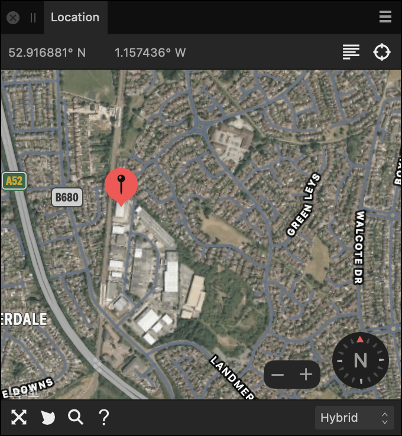

Options
The following options are available in the panel:
- Click anywhere on the map to set the location of the pin. This information will then be integrated into your image's metadata
 Address—search for a location using an address.
Address—search for a location using an address. Locate—sets the pin to your current location (see note below).
Locate—sets the pin to your current location (see note below). Scale guide—displays the measurements used in the map.
Scale guide—displays the measurements used in the map. Compass—provides the ability to rotate the map for convenient navigation.
Compass—provides the ability to rotate the map for convenient navigation. Zoom—provides the ability to zoom in or out of the map.
Zoom—provides the ability to zoom in or out of the map. Points of Interest—displays landmarks on the map.
Points of Interest—displays landmarks on the map.- Map views—sets the type of map which displays in the panel. Select from the pop-up menu.